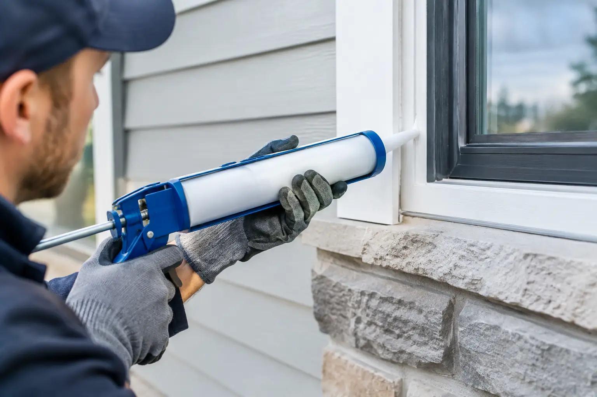

Caulking Service Calgary Homes Can Rely On
By Vitalii Nestorenko · September 28, 2026 · 6 min read
A cracked line of caulk around a tub or window can look like a small cosmetic problem. In Calgary, it can also be the first opening for moisture, drafts, mould, and damaged finishes. A professional caulking service Calgary homeowners can call for help is often a simple, affordable way to protect the areas of a home that take the most daily wear.
Good caulking is not about squeezing a new bead over an old one. The preparation matters just as much as the finished line. Old failed material needs to come out, the surface needs to be cleaned and dried, and the right product needs to be used for the location. That is what helps the repair stay flexible, clean, and watertight.
When Your Home Needs New Caulking
Caulk does not last forever. Bathrooms, kitchens, exterior windows, and door frames all move slightly with temperature changes, moisture, and normal settling. Calgary’s changing seasons can make that movement more noticeable, especially around exterior openings.
Look closely at the caulk around your shower, bathtub, sink, backsplash, windows, and exterior trim. It is time to address it if you see cracks, gaps, peeling edges, shrinking, mildew that returns after cleaning, or a bead that has pulled away from one surface. A draft near a window or discoloured drywall below a bathroom fixture can also point to a failed seal.
Waiting is rarely helpful. Water can travel behind a wall, under flooring, or into a window opening long before the visible damage becomes obvious. Replacing a small section of caulk now may prevent a larger drywall, paint, flooring, or rot repair later.
Where Professional Caulking Makes the Biggest Difference
Not every caulking job has the same purpose. Indoor wet areas need a mildew-resistant seal that handles regular cleaning and moisture. Exterior joints need a flexible, weather-resistant product that can move with the materials it joins. Using the wrong type may look fine at first, then crack or lose adhesion within a season.
Bathrooms and Showers
Bathroom caulking is one of the most common maintenance jobs in a home. The joint where a bathtub meets the wall, the corners of a shower enclosure, and the edge of a vanity backsplash are all frequent water-entry points.
When shower caulk is blackened, split, or lifting, simply cleaning it will not restore the seal. The old material should be removed without damaging tile, acrylic, or surrounding finishes. The area then needs time to dry completely before new bathroom-grade silicone is applied. If moisture is sealed in behind fresh caulk, the problem can continue out of sight.
Kitchens and Laundry Areas
A small gap behind a kitchen sink, around a countertop, or near a laundry hookup can let repeated splashes reach cabinets and wall surfaces. Caulking these edges keeps moisture from working into particleboard, laminate seams, and drywall.
This is especially worthwhile when installing a new sink, faucet, countertop, backsplash, or laundry fixture. Finishing the work with clean, properly matched caulk makes the installation look complete while protecting the materials around it.
Windows, Doors, and Exterior Trim
Exterior caulking has a different job: reducing water entry and unwanted air movement around trim and penetrations. Gaps around window casing, door frames, siding joints, and utility openings can make a home feel drafty and can expose wood or wall assemblies to moisture.
Exterior work needs a product suited to outdoor conditions, along with careful attention to where caulk belongs. Some window and siding components include designed drainage paths or weep holes. Those must never be blocked. A professional repair is not about sealing every visible gap. It is about sealing the correct joints while allowing the building to drain as intended.
What a Proper Caulking Repair Includes
A neat caulk line starts before the caulk tube is opened. First, the failed material is cut out and removed. That step is important because new caulk may not bond properly to loose, dirty, mouldy, or incompatible material underneath.
Next, the joint is cleaned of soap residue, grease, dust, and debris. In wet areas, the surface must be dry. If there is evidence of active leaking, soft materials, or hidden water damage, that should be investigated rather than covered up. Caulk is a sealant, not a cure for a plumbing leak or a failed building component.
The correct caulk is then selected for the surface and location. Silicone is common in showers and tubs because it handles water well. Paintable acrylic or hybrid products may be a better fit for trim, baseboards, or interior finishing. Exterior applications often call for a flexible, UV-resistant sealant designed for outdoor exposure.
Finally, the bead is applied at a consistent size and tooled for full contact with both sides of the joint. A smooth finish is not just about appearance. Tooling pushes the product into the joint and creates a profile that sheds water more effectively.
Why Caulking Over Old Caulk Usually Fails
It is tempting to run a fresh bead over a cracked or stained one. It is quick, but it often creates a short-term patch. Old silicone can prevent new material from bonding, while trapped mould, moisture, or soap film remains below the surface.
There are exceptions. A very small, clean gap in otherwise sound caulk may be repairable. But when the bead is peeling, badly discoloured, brittle, or separated along multiple edges, removal and replacement is the better choice. It takes more care upfront and delivers a result that is easier to maintain.
Caulking or Grout: Knowing the Difference
Tile showers often have both grout and caulk, and they serve different purposes. Grout fills the joints between tiles on the same flat surface. Caulk belongs where two different planes meet, such as where a tiled wall meets a tub, shower base, countertop, or adjacent wall.
These change-of-plane joints move slightly as the building and materials expand, contract, and flex. Grout is rigid, so it commonly cracks in those locations. Flexible caulk is designed to handle that movement. If a shower corner repeatedly cracks after being grouted, switching that joint to the appropriate caulk is often the right repair.
The Cost of Leaving Failed Caulk Alone
Not every split caulk bead turns into major damage. It depends on the location, how often it gets wet, and whether water has a path behind the finished surface. A small gap at a dry baseboard is less urgent than a gap along the back edge of a frequently used bathtub.
Still, bathroom and exterior gaps deserve prompt attention. Moisture behind a tub surround can lead to swollen drywall, loose tile, mould, and repairs that go far beyond re-caulking. Around windows and exterior doors, water can damage trim and contribute to drafts that are noticeable during colder weather.
For landlords and property managers, timely caulking also helps keep turnovers manageable. A clean bathroom seal and tidy kitchen finish make a unit look cared for, while small maintenance issues are handled before they become tenant complaints or costly repair calls.
Choose Help That Treats Small Jobs Seriously
Caulking can be a stand-alone repair, but it also pairs naturally with other small home tasks. A homeowner may need a shower re-caulked after a faucet replacement, a kitchen sink sealed after a countertop repair, or exterior trim caulked before paint touch-ups. Handling related work in one visit can save time and reduce the frustration of coordinating several contractors.
Nestor’s Home Help provides practical, owner-operated help for these everyday repairs, with the same care given to a small failed seal as to a larger home project. The work should be tidy, the scope should be clear, and your home should be left clean when the job is done.
If you notice lifting caulk, a damp edge, or a draft around an opening, take a clear look before the next busy week pushes it aside. Small gaps are easier to fix while they are still small.
Vitalii Nestorenko is the owner of Nestor's Home Help, a licensed and insured handyman business in Calgary. He holds a Master's degree in mechanical engineering and does every job himself.